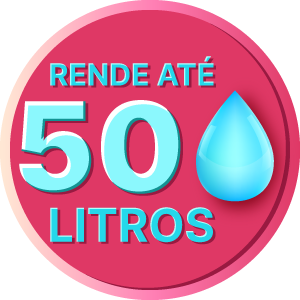

*Valor por litro diluído considerando diluição para limpeza
leve
*Valor por litro diluído considerando diluição para limpeza
leve


SUPER PÓS OBRA 5L - REMOVE SUJIDADES
REF: 14543183⭐⭐⭐⭐⭐
(45) Avaliações. Avalie agora!R$ 75,00
em até 12x de R$ 7,19
1
üîí Aqui sua compra √© 100% segura, compre com
tranquilidade.
üöê Frete e prazo de entrega
| Frete | Valor | Prazo |
|---|---|---|
| CORREIOS PAC | R$ 22,49 | 5 a 6 dias úteis |
| CORREIOS SEDEX | R$ 31,72 | 2 a 3 dias úteis |